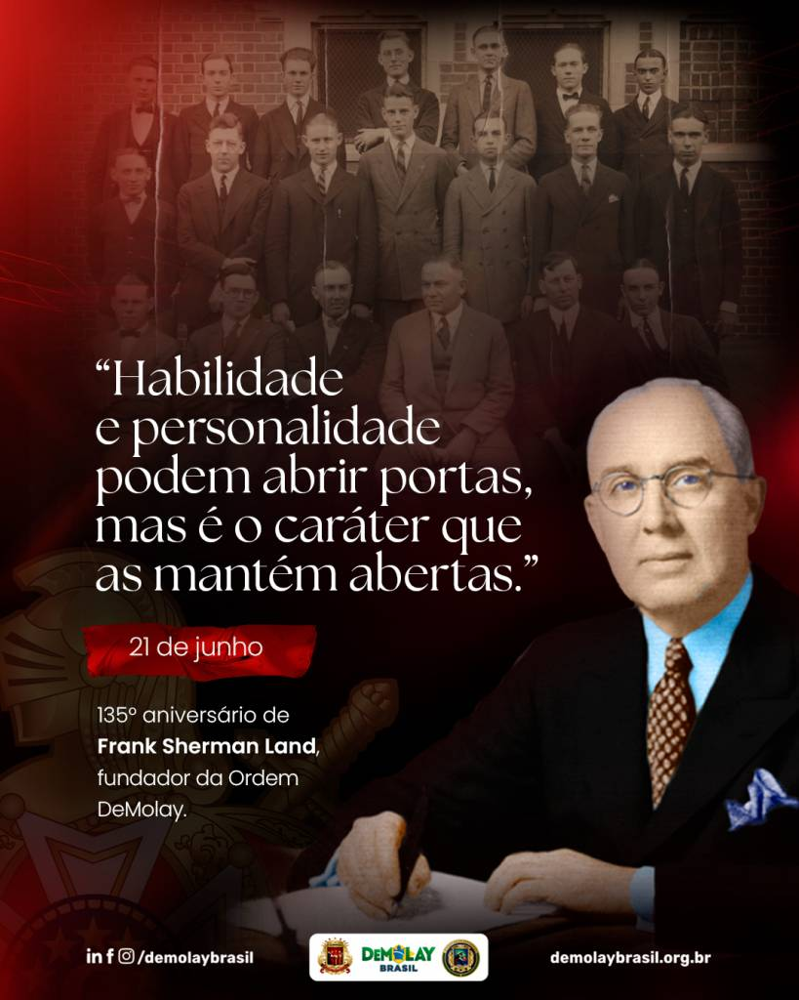

A Ordem DeMolays foi criada no ano de 1919, fruto da interação entre um homem e um jovem rapaz que se conheceram em um momento de adversidade. Parece que estes momentos trazem o florescer dos grandes acontecimentos.
Em janeiro de 1919, Frank Sherman Land recebeu uma ligação de um Maçom chamado Sam Freet. Ele pedia a Land que recebesse, como pupilo, um jovem órfão de pai que precisava de um emprego de meio expediente e alguma orientação. O moço em questão chamava-se Louis Gordon Lower, tinha 17 anos e ajudava a mãe a manter a família depois da partida do pai, Elmer Lower, que assim como Freet e Land, fazia parte da Loja Ivanhoe.
A experiência de interação entre os dois foi excelente. Tanto que Land deu a ideia de juntar mais jovens convidados por Lower para reunirem-se como um clube. O jovem pupilo atendeu ao chamado levando mais oito jovens: Ralph Sewell, Elmer Dorsey, Edmund Marshall, Jerome Jacobson, William Steinhilber, Ivan Bentley, Gorman McBride, e Clyde Stream. Ao receber estes jovens, aquele homem, que não era tão mais velho que os meninos, sugeriu a criação de um clube no qual eles pudessem se reunir e realizar atividades saudáveis, organizadas e sob a supervisão de um adulto. A ideia foi aceita de pronto.
Este clube foi muito propício, pois era uma época de pós-guerra e muitos jovens que haviam perdido os pais para a Primeira Guerra Mundial precisavam de um modelo masculino e uma referência paterna que pôde ser preenchida com o cuidado e amor praticamente paternal que foi oferecido pelo time de adultos que se juntou a Land para cuidar destes jovens.
O passo seguinte foi escolher um nome para este clube. Vários nomes foram citados e nenhum agradava aos rapazes. Um deles sugeriu que, já que estavam em um local de reuniões da Maçonaria, era justo que se usasse o nome de alguém ligado à Maçonaria. Mais uma enxurrada de nomes apareceu e nenhum consenso foi atingido até que o nome e a História de Jacques de Molay, cavaleiro francês da Idade Média que exemplificou a fidelidade e lealdade com o seu comportamento de preservar seus amigos da morte certa oferecendo a sua.
Assim, o novo clube passou a denominar-se Clube DeMolay no dia 24 de março de 1919 (Mais tarde adotara-se 18 de março para coincidir o dia da fundação com o dia em que Molay foi executado). O que veio depois foi o crescimento que se estendeu até os mais longínquos lugares da Terra. Foi transformado de clube em Conselho e por fim Ordem DeMolay que pode ser encontrada em países de grandes proporções como o Brasil ou pequenas ilhas como Aruba.
A Ordem DeMolay está presente no Brasil com cerca de 110 mil membros filiados ao Supremo Conselho DeMolay Brasil, órgão responsável pela administração no país.
